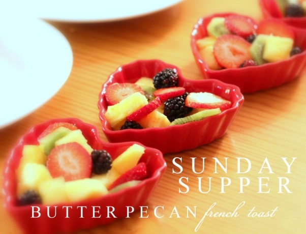
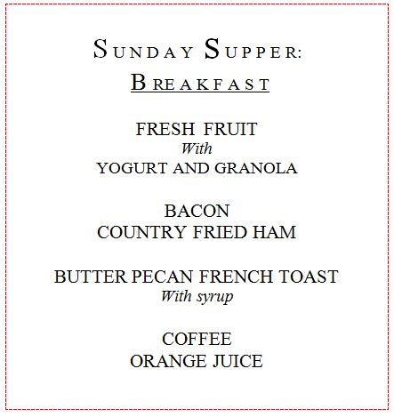

.png)
.PNG)
.PNG)
.PNG)
.PNG)
.PNG)
.JPG)
.JPG)
.PNG)
.PNG)


Sometimes breakfast makes a good supper – especially in the winter. So before winter is gone, I wanted to share this meal with you. It would also make a great breakfast for Valentine’s Day if you are one of those energetic people who actually cook in the morning. (I am certainly not part of that club…Remember, I eat a bowl of Cheerios every. single. day. 🙂 )
This was the simple menu for our breakfast supper.
The 4th of May cafe is a restaurant on one of the islands off the coast of Georgia. They serve a butter pecan French toast that is melt-in-your-mouth-divine. I was not even a huge fan of French toast until I tasted theirs, but it was soooo good I truly wanted to lick my plate when I finished. Yes, it was that good. I purchased their cookbook the last time we were there, but the recipe for the heavenly French toast was not in it. Boo hoo. So I have been on the hunt for the recipe since then. (No, today’s recipe does not duplicate it. Sorry.)
I started this meal by preparing the fruit. Just plain-Jane cut up fruit in some heart shaped bowls from Michaels. (A bargain at $1.99 each!) We had vanilla yogurt and granola as optional toppings for the fruit served in Mason jars.
Then I cut bacon slices in half to make hearts out of them. They were cooked in the oven at 400 degrees for a little under 20 minutes.
 The first step in making this French toast is to cook pecan pieces in butter on the stove for about 3 minutes. My husband did that step, and fried the country ham while I prepared the toast. That involved cutting bread into 1 inch slices. (It was supposed to be French bread for French toast, but all I had was Italian, so I used it. It tasted fine to all of us with it.)
The first step in making this French toast is to cook pecan pieces in butter on the stove for about 3 minutes. My husband did that step, and fried the country ham while I prepared the toast. That involved cutting bread into 1 inch slices. (It was supposed to be French bread for French toast, but all I had was Italian, so I used it. It tasted fine to all of us with it.)
Then I mixed eggs with half and half and some flavored nondairy creamer, dipped the bread slices in, and then put them on a hot griddle to cook.
I flipped them after about 3 minutes on one side.
When they were brown on both sides, they were put on a plate, sprinkled with pecans, and doused with syrup. I used a butter pecan syrup, thinking that might give it more of the taste I was remembering from the restaurant, but it was not sweet enough. So I would recommend using maple syrup and dusting it with powdered sugar. (But my middle child says it does not need the sugar. It is sweet enough. You will have to taste it to decide.)
And that was Sunday’s supper. Here is the recipe for the French toast:
I hope you will enjoy this at either a cozy supper or a nice full breakfast. If any of you have a different recipe for butter pecan French toast I would love to give it a try. Or if any of you happen to have the highly prized recipe for the real deal dish from The 4th of May cafe, I would be forever grateful!!
Oh, and one more thing. I have not been ignoring all the comments here in the last few posts. I have read each and every one. Valentine’s Day ranks right up there close to Christmas with preparation (except no trees for this holiday 🙂 ) and I have been super busy decorating and trying to get some gifts and things together. I want to share those with you this week, and I have a break next week. So hopefully, I will be able to answer emails then. We have also been shopping for things to finish the room over the garage. Lots going on here! Just wanted you to know.
Until next time..


.PNG)
What a lovely Valentine’s meal, so fun. Liking the dishes from Michael’s. I enjoyed reading the comments, too, we all really enjoy our breakfast for dinner. Growing up, my mom would do bacon and eggs or waffles, occasionally, for dinner in the winter. It was so much fun for me, but as others posted, it was probably a break for her! I’m not a huge French toast fan, but up here in New England, a Portuguese sweet bread or a Jewish challah bread is frequently used in restaurants for a very decadent “stuffed” French toast. It is really over the top with the fruit or fruit and cream cheese (or mascarpone)baked between bread slices. It’s like dessert! We are on school vacation, and am guessing your break is soon. Enjoy the fourteenth and the upcoming time off
—————————————————————
Your stuffed French toast sounds divine! I love mascarpone cheese, and it would certainly add a richness to the bread dish. Yum!
Kelly
Kelly,
Sorry to be late to your party…we love breakfast for dinner. This menu is a keeper for after we get back into our house…the hardwood floors are being refinished and we’re staying with friends.
xo,
Karen
———————————————————–
It is more than alright to be “late to the party” since I appear to be late for everything! (Too many irons in the fire.) Hope your hardwood floors are finished and you are back in your home by now..with beautiful floors!
Kelly
OMG, I eat Cheerios every day…..great minds or we simply are too tired to think of anything else at 6:00am.
The French toast really looks good, will have to try it some morning when I have some energy.
Have a great day and hope you are warmer where you are.
Jeanne
Kelly,
Thank you for showing us your Sunday Supper. I can’t wait to see how you have been decorating and what gifts you have bought for the up coming St. Valentine’s day! I am also wondering what you have gotten finished on the new area as well.
Looks so good! I have not had french toast in years. My kids were not big fans of it, but they don’t live here any more and I can make it for me, myself and I. Yes, there are some perks to being an empty nester! I love the idea of the bacon shaped like hearts! Love the bowls too!
Well, Kelly this Sunday Supper has sparked a sweet childhood memory. My sister & I always looked forward to a special treat when business took Dad out of town, as Mother would serve us breakfast for dinner! We though how inventive!!! In reality, I believe she looked at it as an easy meal to prepare that Dad would never allow…After all he was staunch meat & potatoes kind of guy!!! In any case, I have included my recipe for Pecan French Toast, which may given the brown sugar give you that extra sweet you mentioned. It is an easy baked style French toast , which you may even want to try in the morning,if you were to ever forego the Cheerios for breakfast!
PECAN FRENCH TOAST
1 loaf of French bread(day old preferably)
1/2 cup butter, melted
1 cup firmly packed brown sugar
2 tablespoons maple syrup
3/4 cup chopped pecans
4-5 large eggs, lightly beaten
1/2 cup whole milk
1/2 cup half & half
2 tablespoons granulated sugar
1 teaspoon ground cinnamon
1 teaspoon vanilla extract
Preheat the oven to 350.
Cut 10 1-inch-thick slices of bread.
Mix together brown sugar, butter, & maple syrup; pour into a lightly greased 13×9-inch baking dish. Sprinkle with chopped pecans.
Whisk together eggs, milk, half & half, granulated sugar, cinnamon & vanilla. Arrange bread slices over pecans; pour egg mixture over bread. Cover and chill 8 hours.
Bake 35 minutes or until set & golden brown.
Serve immediately with a light dusting of confectioners sugar.
Enjoy!
————————————————————
Thanks for the recipe Lynn! I will give this one a try the next time I am preparing breakfast for dinner (and maybe other readers will as well.) Sounds delicious!
Kelly
Yum..this looks so good!
We went to Memphis this past week to visit my husband’s sister and her family. You would love her pretty house. We ate lunch at Hueys on Saturday…best ever hamburger! Patrons shoot toothpicks through straws and try to get them to stick in the ceiling while munching on fired dill pickles…sounds weird but was fun! Each year Huey’s takes down the ceiling tiles and counts all the toothpicks.Whatever the number is, they donate that amount of $ to the Memphis Zoo.
Then I got to be in Hobby Lobby heaven for 2 hours with my sweet neice!
My husband and I fixed chuck roast and all the fixins’ with banana pudding for dessert for Saturday’s dinner. My sweet sister- in-law is battling breast cancer and currently has weekly chemo treatments.(only 6 more to go..WOO HOO!) Unfortunately she was unable to eat dinner but she called last night and had eaten leftovers on Sunday.
Good food, good times and family you love oh so much…..
I’ve never ordered pecan French toast at the 4th of May Cafe–but I will the next time. We’ve been vacationing at St. Simons for almost 30 years, it’s like out second home. Enjoyed your post this morning.
————————————————————
Oh I hope you do order it the next time you are there, Kay. It is soooo yummy! Wish I had an order of it now. If you do go, see if you can get the recipe. If you have been vacationing at St. Simons for that long, perhaps they will share it with you. 🙂
Kelly
Yum!Yum! love the little bacon hearts, too! More snow is possibly headed our way. I’m off to the store to get supplies for french toast if it snows. Thanks! ps–can’t wait to see your Valentine decorations post.
Well, good morning Kelly. It is -5 with wind chills of -25 here in the Midwest. I just made pancakes with fresh blueberries this morning. Yes, I do make breakfast most mornings and my husband usually is head chef on the weekend breakfast shift. Hubs is already out the door and the other two still snoozing. I like cheerios too, but feel that a warm breakfast before heading out is my “I love you” start to the day. Your casual dinner looks yummy. I have never made French toast using a French bread. I need to try that. I too, love your bacon hearts. Does it splatter badly if cooked in the oven? How cute. I will be using my heart ramekins this week, as well. I got mine several years back at Target in the $1 section. Love them. I am sure you are one very busy family, as we are too. Over here it has been Cheerios for a healthy late night snack besides a quick breakfast. Can’t wait to see all your wonderful heart touches for your valentines post. Stay warm Kelly. A little more cold to come your way I think….
————————————————————-
Debra, it does splatter in the oven. I think bacon splatters where ever you cook it. My personal preference is in the microwave with a paper towel on top of it, but one of our sons thinks it kills the flavor and texture to cook it that way. He insists on cooking it in a cast iron skillet every time he makes it, but he did think the oven cooking kind was find. (I guess that is our compromise method there!)
Hope it has warmed up some there!
Kelly
What a SWEET & LOVEly Valentine week menu and post!! It’s just the little fine details that make everything so special at your house! The bacon “hearts” made me smile— I would have never thought of doing that! Your area has truly been having a real winter this year. I think some more winter-like weather may be headed your way this week— keep your fire wood ready and your winter throws handy! 3 day weekend next week?
————————————————————
4 day weekend! And the students get a 5 day one because we have inservice training tomorrow (aka “a day full of meetings.”) Guess you are enjoying the spring like weather we have been having the last few days now. We’ll probably have snow next week as crazy as this winter has been, right?!
Kelly
LOVE the idea for this Valentine’s day surprise! And I am embarrassed to say that I never thought of cooking French toast on a grill pan – BRILLIANT. Instead I was always standing at the stove over a skillet, trying to get everyone’s food to them, keeping some warm in the warming oven, etc. and exhausted by the time I got food to the table. Definitely doing this in the future…. probably on Friday!
Thanks again for another great idea and for your beautiful presentation too. Yet another win from “Talk of the House”!
Hugs, Pippa
————————————————————-
Oh yes, certainly the way to get all of the slices cooked at close to the same time. You could still keep some warm in the oven if you needed more than 8 or so slices at a time. I keep lusting over the beautiful All Clad electric griddle at Williams Sonoma, (just for its beauty) but I don’t think it is as big as the one we have. I hope you get to make the French Toast soon. Let me know if you think it is sweet enough if you make it. Thank you again for your kind words here!
Kelly